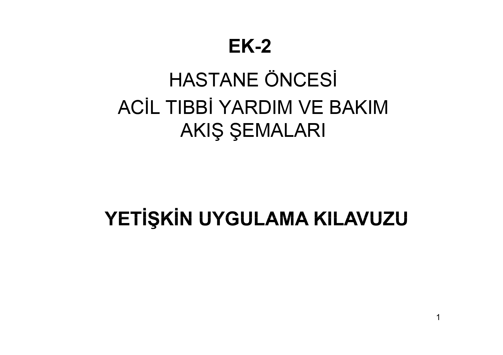

112 ALGORİTMİK UYGULAMA KLAVUZU
Ana Sayfa
Başlıklar
İletişim
112 ALGORİTMİK UYGULAMA KLAVUZU
Keyif ve kolaylıklar dilerim...
1- YETİŞKİN UYGULAMA KLAVUZU
2- UYARILAR
3- KISALTMALAR
4- YETKİ VE SORUMLULUKLAR
5- SAHA YÖNETİMİ
6- İLK DEĞERLENDİRME
7- ÖYKÜ VE MUAYENE
8- SÜREKLİ DEĞERLENDİRME
9- KALP DURMASI - İLERİ YAŞAM DESTEĞİ - YETİŞKİN
10- ASİSTOLİ / NEA
11- VF / NABIZSIZ VT
12- BRADİKARDİ (YETİŞKİN)
13- TAŞİKARDİ (YETİŞKİN)
14- BİLİNÇ DEĞİŞİKLİKLERİ
15- ANAFLAKSİ (YETİŞKİN)
16- YANIK
17- YANIK DOKUZLAR KURALI
18- GÖĞÜS AĞRISI (TRAVMATİK OLMAYAN)
19- HİPERTERMİ
20- HİPOTERMİ
21- YILAN ISIRMASI
22- KENE ISIRMASI
23- HİPERGLİSEMİ (YETİŞKİN)
24- HİPOGLİSEMİ (YETİŞKİN)
25- VERTİGO (YETİŞKİN)
26- NORMAL DOĞUM
27- DOĞUMDA GÖBEK KORDONU SARKMASI
28- DOĞUMDA MAKAT GELİŞ
29- DOĞUMDA EKSTREMİTE GELİŞ
30- HAVAYOLU TIKANMASI
31- ASTIM (YETİŞKİN)
32- KRUP / EPİGLOTTİT
33- AMFİZEM / KOAH (YETİŞKİN)
34- KALP YETERSİZLİĞİNE BAĞLI AKUT AKCİĞER ÖDEMİ (YETİŞKİN)
35- NÖBET (KONVÜLZİYON) (YETİŞKİN)
36- ÜÇÜNCÜ TRİMESTER EKLAMPSİSİNE BAĞLI GELİŞEN NÖBETLER
37- HİPOVOLEMİK ŞOK (YETİŞKİN)
38- KARDİYOJENİK ŞOK (YETİŞKİN)
39- SPİNAL İMMOBİLİZASYON
40- SELEKTİF SPİNAL İMMOBİLİZASYON
41- İNME / CVO
42- SUDA BOĞULMA
43- TOKSİKOLOJİ - ZEHİRLENME / DOZ AŞIMI
44- ALKOL İNTOKSİKASYONU / YOKSUNLUĞU
45- NARKOTİKLER / OPİADLAR
46- KOLİNERJİKLER
47- TRİSİKLİK ANTİDEPRESANLAR
48- KOKAİN / METAMFETAMİN
49- KALSİYUM KANAL BLOKERLERİ
50- KRİKOTİROTOMİ, MELKER
51- DEFİBRİLASYON
52- KEMİK İÇİ UYGULAMA (COOK / JAMSHİDİ)
53- KEMİK İÇİ UYGULAMA (EZ / IO)
54- OROTRAKEAL ENTÜBASYON
55- OROTRAKEAL ENTÜBASYON KOMPLİKASYONLARI
56- ERİŞKİN ASPİRASYONU
57- TRAKEOBRONŞİAL ASPİRASYON
58- SENKRONİZE KARDİYOVERSİYON
59- GLASKOW KOMA SKORLAMASI (GKS)
60- KULLANILACAK İLAÇLAR
61- KAYNAKLAR
1- YETİŞKİN UYGULAMA KLAVUZU

İletişim
Recep YENİ
E-posta:
recepyeni@yahoo.com